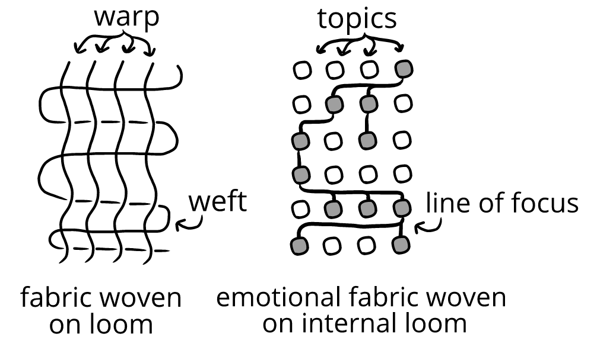

We can look at two different high-level metaphorical models for humor:
- A “particle” model of humor. In this metaphorical model, humor is something that comes to us from outside of us—humor is like a particle that’s emitted by something. When a humor particle strikes us, we feel humor.
- A “loom” model of humor. In this metaphorical model, humor is something that comes from within us. Our experiences are a weave of associations, which creates a kind of emotional fabric. The design or outcome of this fabric—whether we feel anger, humor, or so on—depends on what is woven together, and how.
Our default way of thinking about humor is usually a “particle” model. (“It hit my funny bone just right.”)
This model seems to work well when there are performers and passive audiences: we start watching a show and we start feeling humor—we stop watching and we stop feeling humor. The responsibility for the humor seems outside of us, like on a performer, who tries to “land” jokes that “hit” us right.
The problem with a particle model is that it works less well once we go beyond performers and passive audiences. We can feel humor:
- off and on while having a conversation with a friend
- while just lying on the couch
- when someone is angry at us
- when someone compliments us
- by waking up looking forward to the day
(and so on)
In these cases, the loom model is more inclusive to more experiences, and explains them more completely. The loom model sees humor as happening because of something within us, not because of something outside of us.
Consider:
At first, a metaphor like “internal weaving” can feel unwieldy. But the interaction of our attention, evaluations, expectations, memories, observations, thoughts, and so on does create an analogy to the action of a loom:

This metaphorical internal loom makes up the “fabric” of experiences.
These metaphorical models ("particles" "looms") don’t matter so much in themselves—they’re not meant to be practical. Instead, they’re big-picture methods of orientating how we think about humor.
Depending on which model we align closer with, our methods and observations of humor change.
For instance:
If we think that generating humor is a bit like shooting bottles on a fence (particle model), we’ll tend to think about jokes—or things that seem to straightforwardly contain or deliver humor.
But if we think that generating humor is a bit like weaving (loom model), we’ll think more broadly about humor as something embedded and created within a situation—and jokes would only sometimes relevant to this process.
We saw this with Elias, who found jokes themselves to be flat (particle model). But when he combined elements of his life together, he felt more intricate, situationally-connected humor (loom model).
When Jennifer made Sam laugh, she didn’t use a joke or anything funny or odd (particle model)—instead, she helped topics be active together, like ‘Sam’s physical appearance’ and ‘Jennifer’s opinion of him’—and shifted both of them together to generate humor (loom model). Jennifer didn't transmit humor, but instead helped weave it within Sam.
Consider:
Jennifer would handicap herself if she approached Sam as if he was a bottle she was trying to shoot with jokes.
This metaphor would shift focus away from Sam and onto things external to him—or even onto Jennifer herself. (“What can *I* do to unilaterally force Sam to feel humor?” instead of “what does *Sam* need to have happen for him to feel humor?”)
The point here isn't that we should spend too much time thinking about these high-level metaphors. Instead, the point is to catch the general approach to this book—which is less about “what makes a joke funny” (particle model) and more “what about someone makes a joke funny to them?” (loom model.)
That’s why we won’t be focusing on jokes so much as we will on the thing behind jokes—the emotional fabric that we’ll want to be able to read and work on.
As we do this, we'll learn how to generate humor with the help of things we don’t always think of as “humor”—like arguments, compliments, favors, gifts, gratitude, insults, looks, needling, rough-housing, teasing, timing, and so on. Sometimes we can also generate humor by choosing to do nothing at all.
This will be a fulfilling, powerful way of approaching humor. Instead of looking at humor through a straw, by focusing only on jokes—we'll broaden the horizons of our skills and deepen their effect by focusing on the internal happenings within people.
Fabrics. “Woven fabrics” is an old metaphor for meaning, thinking, and words. The metaphor is still around today in a “text” book, which comes from the Latin word textus, literally "thing woven"—from texere “to weave, to join, fit together, braid, interweave,” and so on. The text of a book was what was woven together (with words).
The idea was that words in arrangement are more than their sum of their parts. If we randomize the text of a novel, it’ll have the same words, but no meaning. This is like any textile—if we randomize a knitted hat, it’ll have the same material, but no shape.
Our emotional textus is like this too—if we somehow randomized our experiences or evaluations, things wouldn’t really make sense. It’s the order and relation of our topics and evaluations that makes us us.
We can segment our overall evaluations into arbitrary sets of bounded evaluations. These "topics" will label our evaluation graphs.
-
Topics are either active or inactive, depending on whether or not we're evaluating mistakes and OKs for them in a particular moment.
-
We can have
multiple topics active at once. Each active topic contributes to our emotional state.
-
Topics help us think about
evaluatory continuity. We can track how past evaluations are involved in present moments of humor.